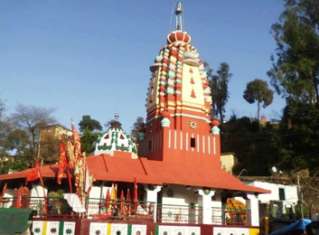
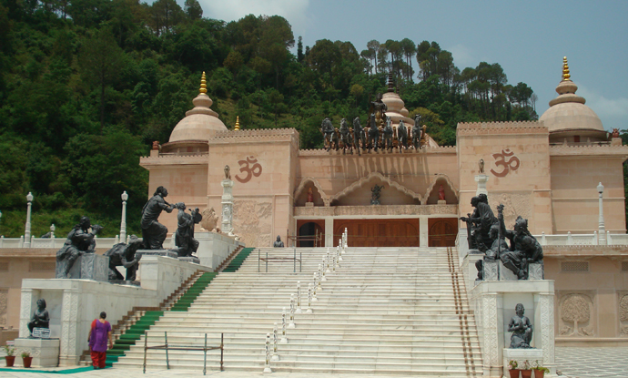
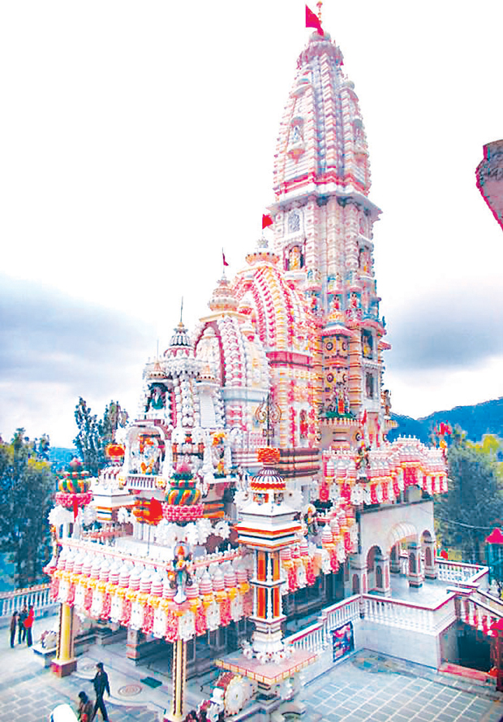
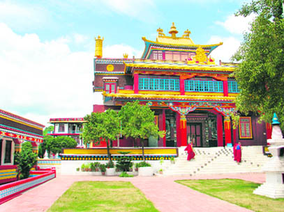

Solan district is one of the twelve districts of Himachal Pradesh state in northern India. Solan town is the administrative headquarters of the district. The district occupies an area of 1936 km². The territory of the present-day district comprises the territories of the erstwhile princely states of Bhagal, Bhagat, Kunihar, Kuthar, Mangal, Beja, Mahlog, Nalagarh and parts of Keonthal and Kothi and hilly areas of the erstwhile Punjab State which were merged with Himachal Pradesh on 1 November 1966. This district came into existence on 1 September 1972. The district was carved out by amalgamating Solan and Arki tehsils of the erstwhile Mahasu district and Kandaghat and Nalagarh tehsils of the erstwhile Shimla district. Its name comes from Mata Shoolini Devi. It's said that she saved Solan from been destroyed.
The Shoolini Mata Temple is dedicated to Shoolini Mata-an incarnation of Goddess Durga. The shrine is one of the prime attractions of Solan. It is also believed that the town of Solon was named after Shoolini Mata, who is the presiding deity of the temple. As per legends, the temple was once the abode of Shoolini Mata.

The shrine attracts huge crowd during festival days, especially during the Shoolini fair. The temple looks beautiful in the night when it is completely illuminated and is crowded on holidays and festivals. Other highlights of the fair are activities like dancing, singing and wrestling .The fair attracts traders, sweet sellers, general merchants and shopkeepers from the neighbouring town. Maa Shoolini is also popularly known as Dhuruvi, Dhuru ki Devi, Shoolini Durga, Shivrani, Shulini Devi, Saloni Devi, Salonee Devi, you can call her with any name, what matters is the purity of heart. She is also called "Paharon ki Rani", "Queen of Mountains or "Queen of Himalayas"
Mohan Shakti Heritage Park is an ultimate place to visit. Mohan Shakti Heritage Park is North India's first ever ancient heritage park. National Heritage Park is located at Shakti Sthal on NH 22 between Kalka and Shimla. The picturesque park is supplemented with many unique structures. The park is still under construction and is believed to be the largest heritage park in Himachal Pradesh. Here, tourist can enjoy exploring a heritage park, pass through grasslands, indulge in bird watching, catch glimpses of archaeological sites, and gorgeous landscapes of peaks, clouds and sunshine.

Within the huge periphery of the park, there is a beautiful shrine, Kali Ka Tibba temple. The shrine seems like an emerald amidst the wilderness. The entire complex of Heritage Park is dotted with multiple statues, sculptures and statuettes. Huge statues of Indian Gods and Goddesses can be seen here. Unique animals made of plaster of Paris (POP) are the main attractions of the park. Inside the complex of Heritage Park, there are herbal therapy centres, community kitchens, theme parks, residential blocks, temples, study centres, open theatres and ropeway trolleys. This heritage park was built with the purpose to promote Vedic Sciences as a topic of interest for the younger generation and also to preach them about Indian culture
If a tourist wants to see a grand and spectacular temple, perched on a hill top then Jatoli Shiv temple is the place to be. Jatoli gets its name from the long Jata (hair) that Lord Shiva has. Considered as Asia's highest Shiv temple, this shrine is indeed an architectural marvel. Jatoli Shiv Temple is one of the famous holy destinations of Solan which attract a large number of pilgrims and is only 6 Kms from the city.

Multiple fables and stories are associated with the history of Jatoli Shiv Temple. It is one of the oldest temples of Lord Shiv where an ancient linga is the also placed since a long time. It is believed that the temple was once the resting place of Lord Shiva. The temple is made in typical Southern-Dravidian style architecture and is made of three consecutive pyramids. On the first pyramid, one can see the image of Lord Ganesha while on second pyramid there is a sculpture of Shesh Naag. Jatoli Shiv Temple holds the tag of being the highest temple in Asia; it took 39 years to complete the construction of the temple.
Bon monastery in Solan is the second oldest Bon monastery in the world. The monastery is highly revered by the people of the Bon community. The Bon community is even older than the Buddhist community though the principles are the same. Perched on a hill top, the Bon monastery offers picturesque views of the town and snow-capped mountains.

The monastery is a grand spectacle, boasting manicured gardens and an impressive statue of Tonpa Shenrab Miwoche. The monastery was founded in 1969 by the Abbopt Lungtog Tenpai Nyima. The chief of the monastery is Menri Trizin. People participate in religious ceremonies and it is also a ritual to walk in a clockwise direction around the monastery.